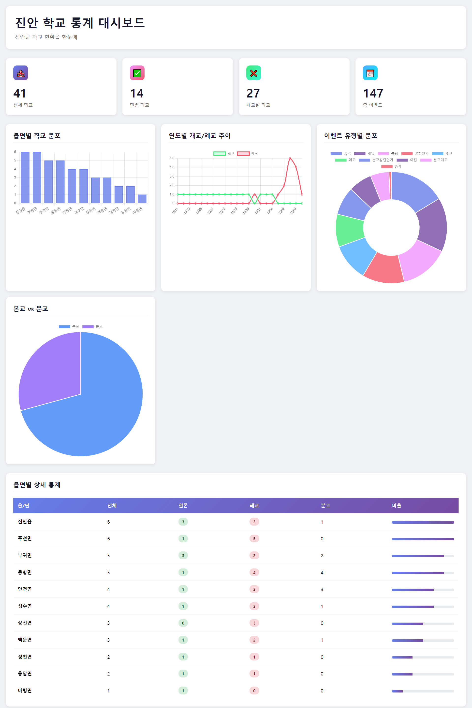
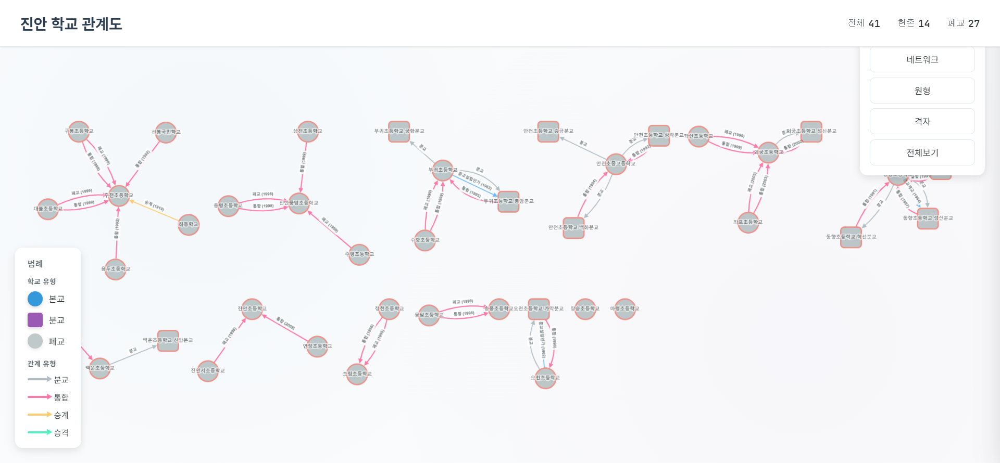
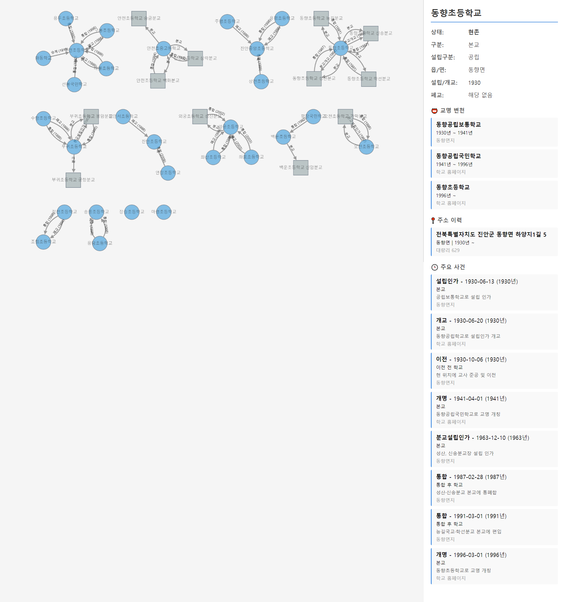
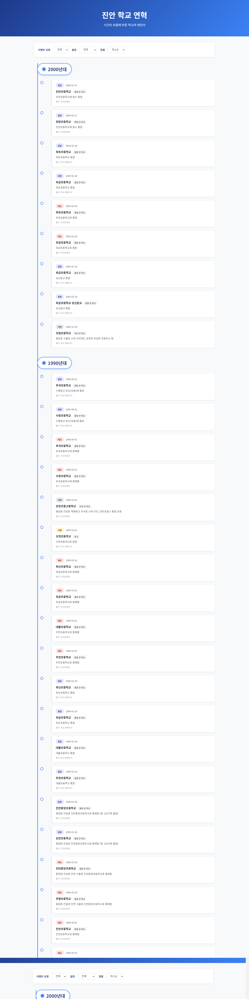

Results

프로젝트 결과물

진안 학교 통계 대시보드
읍면별 분포, 연도별 개교/폐교 추이, 이벤트 유형별 분석

학교 관계 네트워크
본교-분교, 통폐합 관계를 시각적으로 표현

학교 상세 정보 뷰
교명 변천, 주소 이력, 주요 사건 타임라인
폐지학교 현황 분석
데이터 업로드, 필터링, 관계 그래프 통합 도구

학교 연혁 타임라인
연도별 학교 설립/폐교/변경 이벤트 연대기